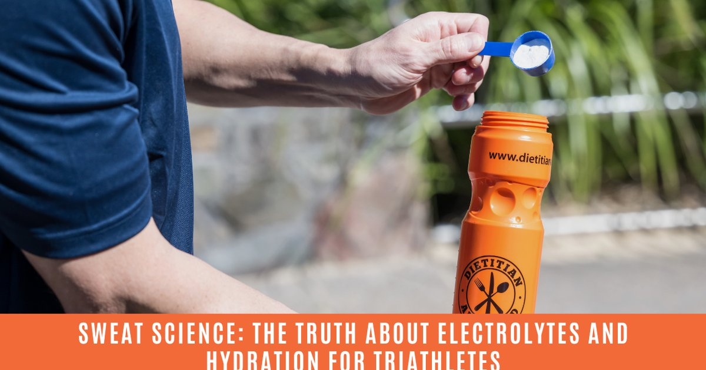

I remember staring at the scale after the Ironman and feeling confused. Not tired, not hungry, not even that sore. Confused. Because the scale said I had gained three pounds since the start line. Three pounds. During a 140.6‑mile race. How is that even possible? The client was a 34‑year‑old triathlete named Derek. He had been training for two years. His nutrition was dialed. His pacing was perfect. But he kept cramping during the marathon leg, and his times were plateauing. He came to me because a friend said I specialized in “weird hydration stuff.” I asked him to record everything he drank during a training half‑Ironman. He sent me his log, and my jaw dropped. He was drinking 1.5 liters (about 50 ounces) of plain water per hour. Plain water. No electrolytes. No sodium. Just “the baseline,” as I call it. He had read somewhere that you should “drink before you’re thirsty,” so he was forcing down water every 10 minutes. Let me do the math for you. Derek weighed 75 kilograms (165 pounds) before the race. His sweat rate, which we later measured with a sweat test, was 1.2 liters per hour. That’s a lot — about 40 ounces per hour. He’s a heavy sweater, especially in the Miami humidity where he trains. His sweat sodium concentration came back at 820 milligrams per liter. That’s also on the salty side. So in a 5‑hour training race, he was sweating out 6 liters (200 ounces) of fluid. That fluid contained almost 5,000 milligrams of sodium. But he was drinking 7.5 liters (250 ounces) of plain water. That’s 1.5 liters more than he was sweating. And that extra water had zero sodium. You don’t need a medical degree to know what happens next. His blood sodium level dropped. He was diluting his own bloodstream. The medical term is exercise‑associated hyponatremia. The symptoms include bloating, nausea, headache, confusion, and in severe cases, seizures or coma. Derek’s symptoms were subtle: he felt puffy, his fingers looked like sausages, and he had to stop to pee every 40 minutes during the run. He thought that was normal. The three pounds he gained during the full Ironman? That was all water. Retained because his body was so low on sodium that it couldn’t flush the excess fluid out. Instead of hydrating him, the plain water was making him overhydrated and under‑salted. He was literally drowning himself from the inside. I’ve seen this mistake over and over. People hear “stay hydrated” and they think “drink as much water as possible.” But hydration is not a volume game. It’s a balance game. You need the right amount of fluid AND the right amount of electrolytes. Especially sodium. So we fixed Derek’s protocol. First, we measured his actual sweat rate using a pre‑ and post‑exercise weigh‑in. He would weigh himself naked before a one‑hour run, drink nothing during, then towel off and weigh again. The difference, plus any fluid he drank, was his sweat rate. We did this in different temperatures and at different intensities until we had a solid average: 1.2 liters per hour. Then we did a sweat sodium test. There are patches you can buy, or you can do the “salt stain” check: after a hard workout, look at your clothes. If you see white salt rings, you’re a salty sweater. Derek had salt rings so thick you could scrape them off with a fingernail. His sweat sodium came back at 820 mg/L, well above the average of 500‑700 mg/L. Now we had the numbers. His hourly fluid loss was 1.2 liters (40 ounces). His hourly sodium loss was about 1,200 milliliters of sweat times 820 mg/L = 984 milligrams of sodium. That’s almost a full gram of salt per hour. A typical sports drink has about 400‑500 mg of sodium per liter. So if he drank only sports drinks, he’d get about 600 mg of sodium per hour — still short by almost 400 mg. The new protocol we built was simple but aggressive. First, we cut his plain water intake from 1.5 liters per hour down to 500 milliliters (17 ounces) per hour. That’s less than half. But we added 500 mg of sodium to that 500 milliliters. How? He used a high‑electrolyte tablet dissolved in one of his bottles. The tablet gave him about 300 mg of sodium, and he also took a salt capsule at the top of every hour for another 200 mg. Total sodium per hour: about 900‑1,000 mg. Perfect match. We also changed his pre‑race routine. The night before, he drank 500 mL (17 oz) of an electrolyte solution instead of plain water. On race morning, he drank another 500 mL with a salt tab. And we told him to stop forcing water. Drink when thirsty, but his thirst would now be accurate because his sodium was balanced. The result? Derek dropped 12 minutes off his half‑Ironman time. His cramping disappeared. He stopped gaining weight during races. He said his fingers looked like normal human fingers for the first time in years. Six months later, he qualified for the World Championship. I tell this story to every athlete I work with. Not to scare them, but to show that hydration is not about how much you can drink. It’s about matching your intake to your losses. And that means knowing your sweat rate and your sweat sodium. Without those numbers, you’re guessing. And guessing can make you gain three pounds during an Ironman. That’s the thing about plain water. It’s “the baseline” for a reason — it’s neutral. It doesn’t add electrolytes. It doesn’t take them away. But if you drink it in huge excess, it will dilute your blood sodium and cause hyponatremia. That’s why I always say: “Fluid needs are individualized.” Not eight glasses. Not one size fits all. Your goal depends on your body weight, your sweat rate, the climate, your genetics, and your activity level. For Derek, the individualized goal was about 3.2 liters (108 ounces) of total fluid per day on training days, with about 2,500 mg of sodium spread across his drinks and food. Compare that to the old “8 glasses” myth, which is only 1.9 liters (64 ounces) and zero sodium guidance. No wonder people get confused. If you want to avoid Derek’s mistake, here’s a simple plan. First, do a sweat test. Weigh yourself before and after a one‑hour workout. The weight difference in ounces is roughly how many ounces of fluid you lost per hour. Add any fluid you drank during the workout. That’s your sweat rate. Second, check your salt stains. White rings on your hat or shirt mean you’re losing a lot of sodium. Third, for workouts longer than 90 minutes, replace sodium at about 500‑700 mg per liter of sweat. For heavy sweaters like Derek, go up to 900‑1,000 mg per liter. I built a tool that does these calculations for you.Exercise Sweat Loss Estimator
Enter your pre‑ and post‑workout weight, duration, and conditions. The tool calculates your sweat rate and sodium replacement needs in mg/hour.
All data stays in your browser — we never see it.
Daily Water Intake Calculator
Baseline by body weight, then adjust for climate, activity, altitude, and life stage.
All data stays in your browser — we never see it.